Maneje el ratón con gestos de las manos frente a la cámara del portátil. Para dibujar en 2D y girar modelos en 3D.
Versión 1.0.2 · Windows 64 bits
01
Qué es y para qué sirve
Lycan Mouse Control mira sus manos con la cámara del portátil y mueve el puntero por usted. Con señas sencillas hace clic, arrastra, acerca y aleja el dibujo, y gira modelos en 3D.
Está pensado para diseño: EDWIN CNC CAD-CAM y LibreCAD en 2D, y EDWIN CNC 3D, SketchUp, FreeCAD y Blender en 3D.
Girar modelos
Cierre el puño y muévalo: el modelo gira. Si prefiere, use las dos manos, como un volante.
Presentar
Muestre un diseño al cliente sin acercarse al teclado.
Descansar la mano
Alterne con el ratón para no cansar siempre la misma mano.
ImportanteEs un complemento del ratón, no lo reemplaza. Para marcar puntos exactos, use el zoom y el enganche (las ayudas para pegarse a puntos) del programa de dibujo.
02
Novedades de la 1.0.2
La 1.0.2 trae clics más firmes, una tecla o pedal para hacer clic, una forma más fácil de girar en 3D y señas con la palma para pasar páginas. Las señas de la 1.0.1 siguen funcionando igual. Toque cada seña para ver su explicación con dibujo.
Otra postura para trabajar, en el asistente y en la calibración.
Apagado
⚙ Opciones ▸ Comodidad
Si viene de la 1.0.1Al abrir verá una sola vez el aviso «Nuevo: el 5 del teclado numérico hace clic. Se cambia o apaga en ⚙ > Clic.» El giro con dos puños, como un volante, sigue disponible en ⚙ Opciones ▸ Girar: escoja «Dos puños» o «Los dos».
03
Video tutorial
Vea las señas en acción antes de empezar.
Video tutorialLycan Mouse Control paso a paso
04
Requisitos
Windows
Windows 10 u 11 de 64 bits.
Cámara
La del portátil sirve. También una cámara web por USB.
Equipo
No necesita tarjeta de video. Funciona en un portátil común.
Luz
Una lámpara frente a usted. Evite tener una ventana detrás.
Ábralo con doble clic. No pide permisos de administrador.
Si quiere, marque crear un ícono en el escritorio o abrir al encender el computador.
Al terminar, abra Lycan Mouse Control desde el menú Inicio o el escritorio.
Si Windows lo detienePuede salir un aviso azul que dice «Windows protegió su PC» (SmartScreen). Sale porque el programa es nuevo y todavía pocas personas lo han descargado.
Haga clic en «Más información» y luego en «Ejecutar de todas formas».
Si ya tiene la 1.0.1, instale la 1.0.2 encima: conserva sus opciones y el ajuste de su mano.
Si más adelante lo desinstala, el programa le pregunta si quiere borrar su configuración. Si dice que no, la conserva para la próxima vez.
06
La primera vez
La primera vez se abre un asistente que le enseña las señas paso a paso. Mientras practica, el ratón no hace nada. Puede saltar cualquier paso.
Prepare la luz. Encienda una lámpara frente a usted, no detrás. Si hay una ventana a su espalda, la cámara ve la mano oscura.
Escoja la postura. La de siempre es el brazo apoyado: el codo en la mesa y la mano a unos 40 a 60 cm de la cámara, con la palma hacia la pantalla. La otra es mano baja, cerca del teclado. El asistente le dice cuál quedó escogida.
Escoja su mano: derecha o izquierda. Con ella moverá el puntero.
Ajuste a su mano (unos 40 segundos): el programa le pide abrir la mano, cerrar el puño y hacer cada seña. Así aprende cómo son sus manos.
Practique activar, mover, hacer clic (con el índice o con el anular), clic derecho, acercar y alejar, y pausar. Luego pruebe la tecla de clic: tóquela 2 veces para practicar, cada toque es un clic. Si no la quiere, escoja «No quiero clic con tecla». Si escogió 3D, también girar, mover y soltar el modelo.
Arranca en pausaCada vez que lo abre, el programa empieza en pausa: sus manos no mueven nada hasta que usted haga la seña de activar. Así no hace clics por accidente.
Puede volver al asistente cuando quiera desde el menú ? ▸ Volver a practicar señas. En ese mismo menú está la chuleta de señas, un resumen para tener a la vista.
07
Señas de Mouse Control 2D
Los dibujos muestran la mano derecha como usted la ve en la pantalla, en espejo. Con la mano izquierda es igual, al revés.
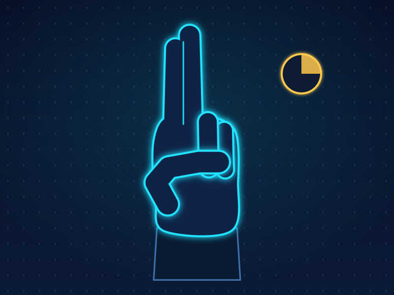
Activar
Dos dedos juntos
Estando en pausa, estire el índice y el corazón bien pegados, como diciendo «dos». Doble los otros dedos. Sosténgala un momento (un cuarto de segundo).
Pausar y soltar todo
Dos dedos juntos, dos veces
Estando activo, haga la misma seña dos veces seguidas, rápido (en menos de un segundo). Pausar es como levantar el ratón para reacomodarlo.
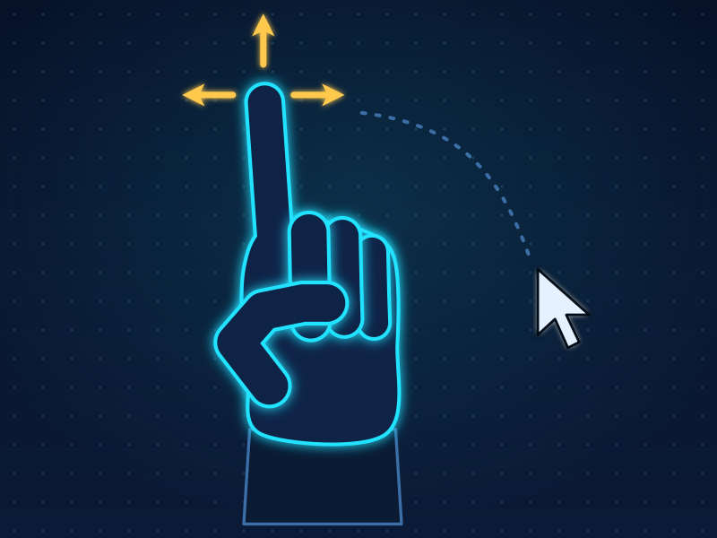
Mover el puntero
Dedo índice
El puntero sigue la punta del índice. Funciona como un espejo: si mueve la mano a la derecha, el puntero va a la derecha. El programa quita el temblor.
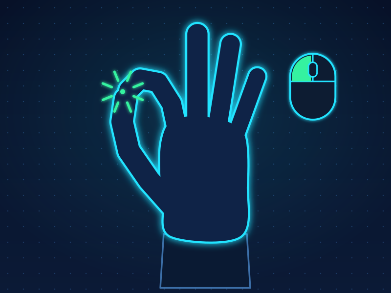
Clic izquierdo
Pellizco pulgar + índice
Junte la punta del pulgar con la del índice y suéltelas. El clic cae donde estaba el puntero justo antes de cerrar los dedos, para que no se corra. Si aun así se le corre, use el clic con el anular o la tecla de clic.
Arrastrar
Pellizco sostenido y mover
Junte pulgar e índice y, sin soltarlos, mueva la mano. Abra los dedos para soltar. Sirve para mover piezas o hacer una ventana de selección.
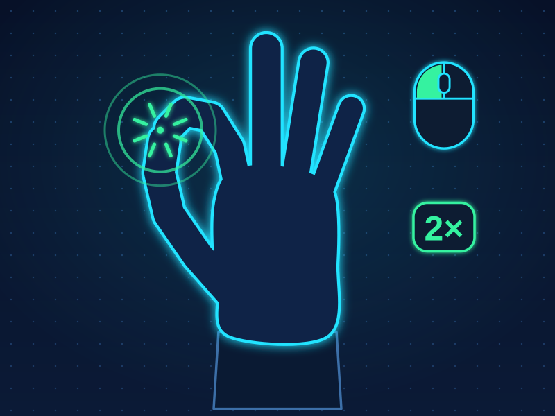
Doble clic
Dos pellizcos rápidos
Haga el pellizco dos veces seguidas, rápido, sin mover la mano. Más fácil: junte el pulgar con el meñique una vez.
Clic derecho
Puño cerrado
Cierre la mano en puño un momento (un quinto de segundo) y ábrala. Deje el pulgar por encima de los dedos.
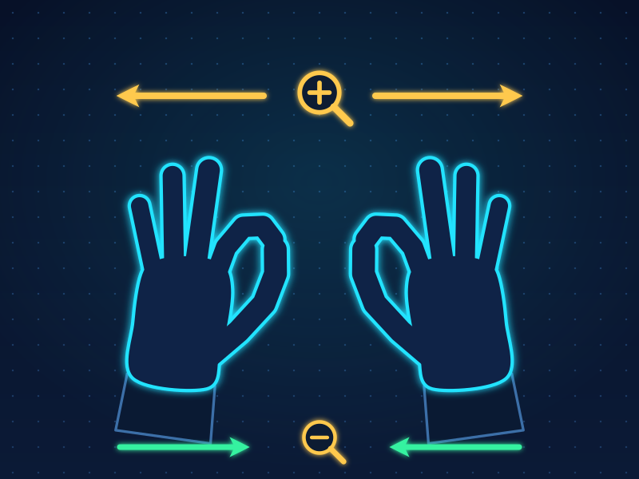
Acercar / alejar
Dos manos en pellizco: separar o juntar
Haga pellizco con las dos manos. Sepárelas para acercar el dibujo y júntelas para alejarlo. Es como mover la rueda del ratón, sin pasarse de velocidad.
Mover el dibujo
Dos manos en pellizco movidas juntas
Haga pellizco con las dos manos y muévalas juntas, sin cambiar la distancia entre ellas. El dibujo se desplaza, como con el botón del medio del ratón.
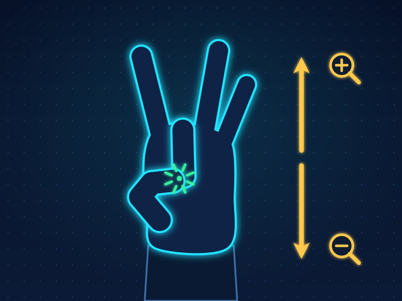
Opcional · viene apagada
Zoom con una mano
Junte el pulgar con el corazón y suba la mano para acercar o bájela para alejar. Para usarla, actívela en ⚙ Opciones ▸ Señas ▸ Zoom con una mano.
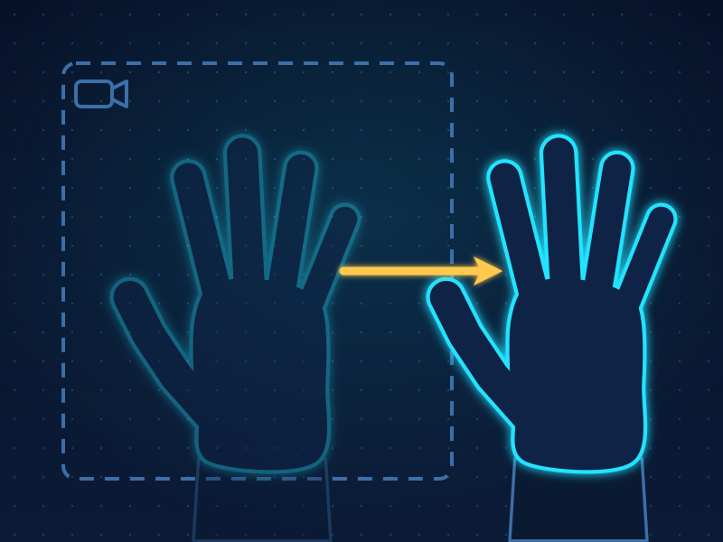
Soltar todo
Sacar la mano
Si la cámara deja de ver su mano, el programa suelta todos los botones casi de inmediato. Si pasan 10 segundos sin ver manos, se pone en pausa solo.
08
Clics nuevos: anular, meñique y tecla
Tres formas nuevas de hacer clic. Sirven en 2D y en 3D. El pellizco de siempre, pulgar + índice, sigue prendido; si no lo quiere, apáguelo en ⚙ Opciones ▸ Clic ▸ «Clic con pulgar + índice».
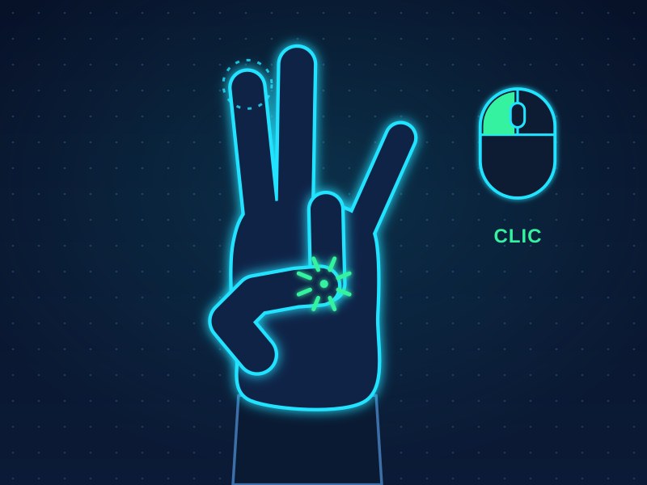
Clic izquierdo y arrastrar
Pulgar + anular Nuevo
Junte la punta del pulgar con la del anular y suelte: es un clic. Si lo sostiene, arrastra; abra los dedos para soltar.
El índice sigue apuntando y no se mueve, por eso el clic no se corre. Viene prendido. Se cambia en ⚙ Opciones ▸ Clic ▸ «Clic con pulgar + anular».
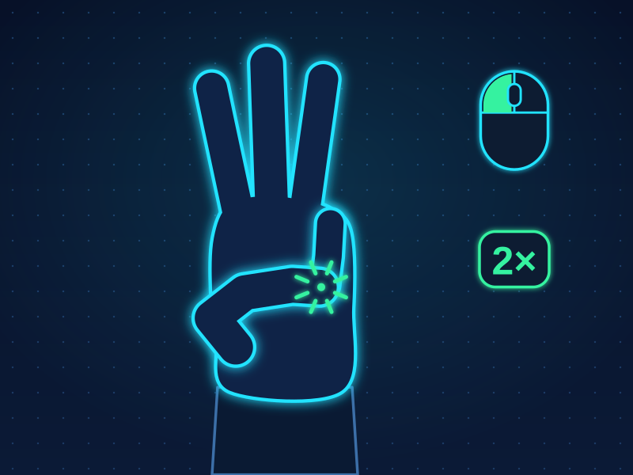
Doble clic (o la acción que escoja)
Pulgar + meñique Nuevo
Junte el pulgar con el meñique un momento (una décima de segundo): hace un doble clic. Aunque lo sostenga, lo hace una sola vez.
En ⚙ Opciones ▸ Clic ▸ «Pulgar + meñique hace» puede escoger otra acción: doble clic, clic derecho, clic del medio, Enter, Esc, Suprimir, deshacer (Ctrl+Z) o nada. La chuleta del programa muestra la que usted escogió.
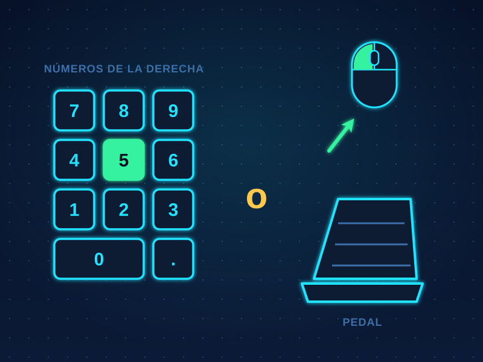
Clic izquierdo con el teclado
Clic con una tecla o pedal Nuevo
Apunte con el índice y haga el clic con la otra mano o con el pie. De fábrica es el 5 de los números de la derecha del teclado.
Un toque: clic.
Dos toques: doble clic.
Sostenerla: arrastrar (el botón queda abajo hasta que la suelte).
En pausa la tecla escribe normal. Mientras el control está activo no escribe. Si el programa se detiene, vuelve a escribir sola.
Escoger la tecla o el pedal
Abra ⚙ Opciones ▸ Clic y deje marcada la casilla «Clic con una tecla o pedal».
Responda «¿Su teclado tiene números a la derecha?». Si dice Sí, usa el 5 de esos números. Si dice No (muchos portátiles no los tienen), grabe otra tecla.
Para grabar, haga clic en «Cambiar tecla». Sale «Apriete ahora la tecla o el pedal que quiere usar… (Esc para cancelar)». Apriete la tecla o pise el pedal.
OjoSi escoge una letra, Enter, Espacio, Tab o Retroceso, el programa la acepta pero le avisa: mientras el control esté activo, esa tecla ya no escribirá. Para no perder ninguna letra, use el 5 de la derecha, una tecla que no use (como F9) o un pedal.
Esc cancela la grabación. Si no aprieta nada, se cancela sola a los 15 segundos. Shift, Ctrl, Alt, Windows y los botones del ratón no sirven como tecla de clic.
Si se queda sin clicSi apaga los dos pellizcos (índice y anular) y también la tecla, el programa le avisa: no tendría cómo hacer clic izquierdo.
09
Palma: pasar página y barrido
Con la palma abierta puede leer documentos y páginas web, y pasar fotos o diapositivas, sin buscar el ratón. En las dos señas la palma va abierta, con los dedos estirados y separados. Una mano relajada no cuenta.
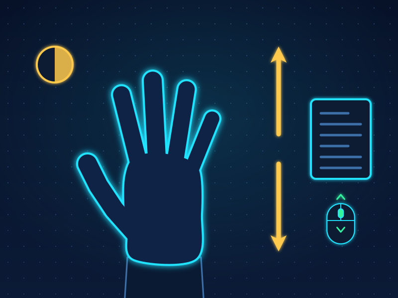
Pasar página (rueda)
Palma quieta, luego subir o bajar Nuevo
Muestre la palma abierta y quieta medio segundo. Suena un aviso y se ve «PASANDO PÁGINA». Luego suba o baje la mano para recorrer la página.
Para terminar: cierre la mano, apunte, pellizque, haga la V, relaje la mano o sáquela de la cámara. Si la suelta apuntando rápido, la página sigue andando un poco y frena sola.
En los programas de diseño esta seña hace zoom, y ahí la página nunca sigue andando sola.
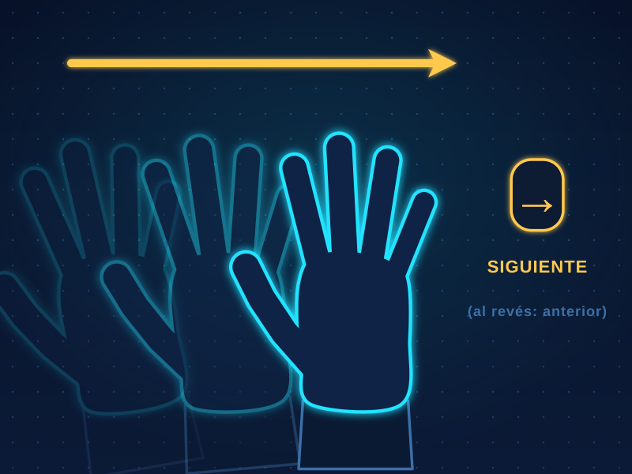
Siguiente / anterior
Barrido a los lados Nuevo
Pase la palma abierta, con los dedos separados, rápido hacia la derecha o hacia la izquierda: siguiente o anterior.
En la mayoría de programas manda las flechas → y ← (fotos, diapositivas, PDF).
En Chrome, Edge, Firefox, Brave y Opera manda Alt+→ y Alt+←: página siguiente o anterior.
En los programas de diseño no hace nada, salvo que usted le ponga una tecla.
Ajustes de la palma
Están en ⚙ Opciones ▸ Palma:
Opción
Para qué sirve
De fábrica
Pasar página con la palma
Prende o apaga la seña de pasar página.
Prendido
La página sigue un poco al soltar
Si suelta apuntando rápido, la página sigue andando y frena sola.
Prendido
Para rápido ↔ Sigue andando
Cuánto sigue andando la página al soltar.
—
Al revés
«Subir la mano sube por la página, como la rueda del ratón». Márquela si le parece más natural.
Apagado
Barrido a los lados
Prende o apaga el barrido.
Prendido
Barrido a la derecha manda / Barrido a la izquierda manda
La tecla que manda el barrido en cada programa, por ejemplo «Derecha» o «Alt+Derecha».
Según el programa
10
Señas de Mouse Control 3D
En 3D sirven todas las señas de 2D, más estas. Cambie entre 2D y 3D con Ctrl+Alt+D o con el botón 2D/3D de la ventana. Al cambiar, queda en pausa.
Desde la 1.0.2 el modelo se gira con un solo puño. Escoja cómo prefiere girar en ⚙ Opciones ▸ Girar ▸ «Girar el modelo con»: Un puño (de fábrica), Dos puños (el volante de la 1.0.1) o Los dos.
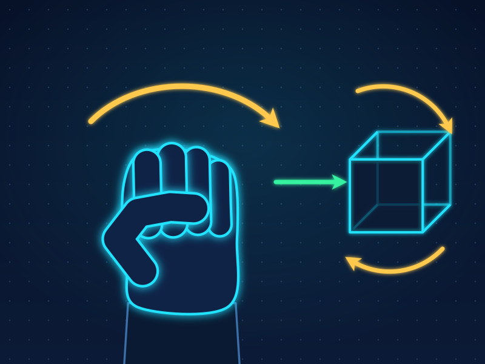
Girar el modelo
Un puño cerrado y movido Nuevo
Cierre el puño y muévalo: el modelo gira hacia donde lleve la mano.
Para soltar: abra la mano. También se suelta si apunta con el índice, pellizca o hace la V.
Si deja el puño quieto un momento (unos 0,3 segundos) y lo abre, sigue siendo clic derecho.
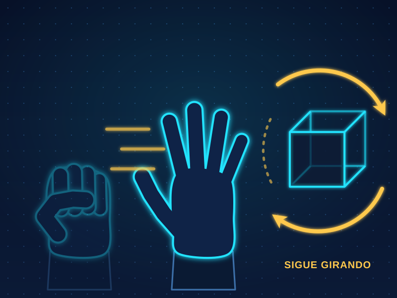
Opcional · viene apagado
Lanzar el modelo Nuevo
Mientras gira con un puño, abra la mano moviéndola rápido: el modelo sigue girando solo y frena poco a poco (como mucho 4 segundos).
Para atraparlo: cierre el puño. También frena si saca la mano de la cámara o aprieta cualquier tecla.
Actívelo en ⚙ Opciones ▸ Girar ▸ «Lanzar el modelo (sigue girando)» y ajuste la barra «Frena rápido ↔ Sigue girando». Solo funciona con el giro de un puño (o «Los dos»).
Girar · con «Dos puños» o «Los dos»
Dos puños, como un volante
Cierre las dos manos como si agarrara un volante y gírelas. También puede subirlas y bajarlas juntas. El modelo gira como con el botón del medio sostenido. Es el giro de la 1.0.1; se escoge en ⚙ Opciones ▸ Girar.
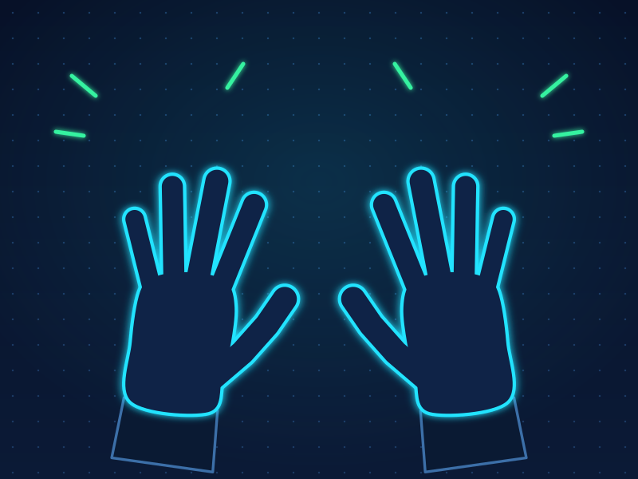
Soltar
Abrir la mano
Para dejar de girar o de mover, abra la mano (o las dos, si giraba con dos puños). Se suelta todo.
Mover el modelo
Dos manos en pellizco movidas juntas
Igual que mover el dibujo en 2D. En 3D el programa usa Shift + botón del medio (o lo que pida su programa de dibujo).
Clic derecho
Puño quieto con una sola mano
Cierre el puño, déjelo quieto un momento y ábralo: es el clic derecho. Si mueve el puño, en cambio, gira el modelo. Con «Dos puños» espera un poco más (medio segundo), para no confundirse con el agarre de las dos manos.
Velocidad del giro
La Velocidad de giro 3D está en ⚙ Opciones ▸ Puntero y vale para todo giro. Si gira con un puño, en ⚙ Opciones ▸ Girar está además «Extra para un puño (además de la Velocidad de giro 3D)»; de fábrica es 1,2.
11
Abrir o cerrar la mano de golpe
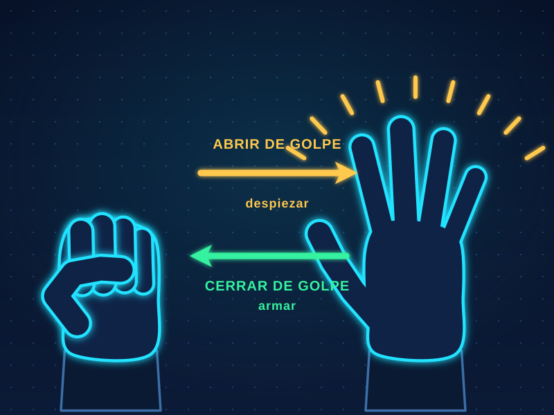
Manda el atajo que usted escriba
Abrir de golpe: despiezar · Cerrar de golpe: armar Nuevo
Abra la mano de golpe, desde el puño: manda el atajo de «despiezar» (separar las piezas del modelo).
Ciérrela de golpe, desde la palma abierta: manda el atajo de «armar».
Abrir o cerrar la mano despacio no cuenta.
Necesita un atajoEsta seña solo hace algo si usted le escribe un atajo, porque ningún programa trae uno de fábrica. La casilla «Abrir / cerrar la mano de golpe» viene prendida, pero sin atajo no hace nada.
Abra ⚙ Opciones ▸ Girar ▸ «Atajos para el programa» y escoja su programa.
Escriba el atajo en «Abrir de golpe manda» y en «Cerrar de golpe manda». Se guarda al salir de la casilla, con Enter o con «Guardar».
Programa
Atajos que sirven
SketchUp
Abrir de golpe: Ctrl+Shift+G · Cerrar de golpe: Ctrl+G
EDWIN CNC 3D
Primero póngale un atajo a «Desdoblar caras» en EDWIN CNC 3D (por ejemplo Ctrl+Alt+U) y luego escriba ese mismo atajo aquí.
No se aceptan los atajos del propio Lycan Mouse Control (Ctrl+Alt con M, X, O, D o P). Si escribe uno de esos, sale el aviso «Ese atajo ya lo usa Lycan Mouse Control (…)» y el gesto no se usa.
12
Postura: mano baja, cerca del teclado
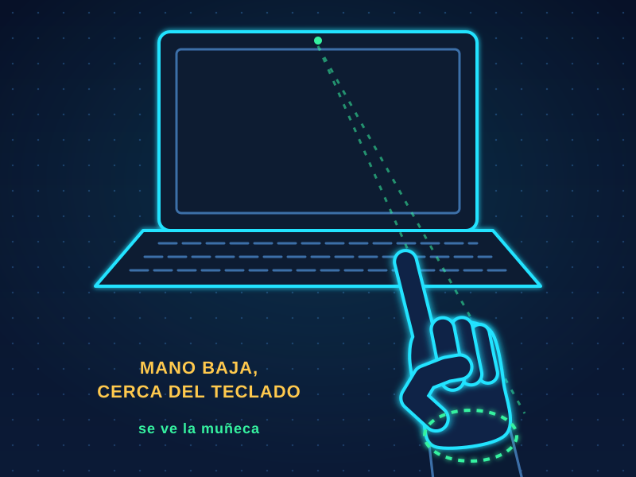
Opcional · viene apagada
Mano baja Nuevo
Para trabajar con la mano cerca del teclado, sin levantar el brazo. Así pasa rápido de las señas a escribir.
Con esta postura, la calibración le pide que se vea la muñeca en la cámara.
Escójala en el paso «postura» del asistente (es la segunda opción) o en ⚙ Opciones ▸ Comodidad.
Después de cambiarla en Opciones, vuelva a calibrar con el botón «Volver a practicar señas» (abajo).
13
Chuleta de señas
Todas las señas en una sola tabla. El programa tiene su propia chuleta en el menú ?; ahí solo salen las señas que usted tenga prendidas.
Seña
Qué hace
Modo
Índice y corazón pegados, un momento
Activar
2D y 3D
La misma seña dos veces rápido
Pausar y soltar todo
2D y 3D
Índice estirado
Mover el puntero
2D y 3D
Pulgar + índice (pellizco)
Clic izquierdo; sostenido, arrastrar
2D y 3D
Pulgar + anular 1.0.2
Clic izquierdo sin mover el puntero; sostenido, arrastrar
2D y 3D
Pulgar + meñique 1.0.2
Doble clic (o la acción que escoja)
2D y 3D
Tecla 5 de la derecha o pedal 1.0.2
Toque: clic · dos toques: doble clic · sostener: arrastrar
2D y 3D
Dos pellizcos rápidos
Doble clic
2D y 3D
Puño quieto un momento
Clic derecho
2D y 3D
Dos manos en pellizco: separar o juntar
Acercar o alejar
2D y 3D
Dos manos en pellizco movidas juntas
Mover el dibujo o el modelo
2D y 3D
Pulgar + corazón, subir o bajar
Zoom con una mano (opcional)
2D y 3D
Palma quieta medio segundo, luego subir o bajar 1.0.2
Pasar página (en programas de diseño, zoom)
2D y 3D
Palma pasada rápido a un lado 1.0.2
Siguiente o anterior
2D y 3D
Abrir o cerrar la mano de golpe 1.0.2
El atajo que usted escriba (despiezar o armar)
2D y 3D
Puño cerrado y movido 1.0.2
Girar el modelo; abrir la mano lo suelta
3D
Soltar el puño moviéndolo rápido 1.0.2
Lanzar: el modelo sigue girando (opcional)
3D
Dos puños, como un volante
Girar el modelo (con «Dos puños» o «Los dos»)
3D
Sacar la mano de la cámara
Soltar todo
2D y 3D
14
Atajos de teclado
Funcionan aunque tenga otro programa al frente. Puede cambiarlos en ⚙ Opciones ▸ Atajos. Los gestos (abrir o cerrar de golpe, barrido) no pueden mandar estos atajos.
Atajo
Qué hace
Ctrl+Alt+M
Pausar o activar.
Ctrl+Alt+X
Salir del programa (antes suelta todo).
Ctrl+Alt+O
Mostrar u ocultar la ventana.
Ctrl+Alt+D
Cambiar entre 2D y 3D (queda en pausa).
Ctrl+Alt+P
Modo dibujo fino: el puntero se mueve más suave.
Teclado latinoamericanoNo se usa Ctrl+Alt+Q porque en este teclado escribe «@». Al abrir, el programa revisa que ningún atajo escriba una letra o un símbolo en su teclado. Si alguno lo hace, no lo usa y le avisa.
15
Programas que reconoce
Cada programa de dibujo usa botones distintos para girar y mover la vista. Lycan Mouse Control se da cuenta solo de cuál programa tiene al frente y usa la combinación correcta. Usted hace siempre las mismas señas.
Programa
Girar
Mover
Acercar / alejar
EDWIN CNC 3D
Botón del medio
Shift + medio
Suave, de a poquitos
SketchUp
Botón del medio
Shift + medio
Normal
FreeCAD (estilo CAD)
Medio + izquierdo
Botón del medio
Normal
FreeCAD (estilo Blender)
Botón del medio
Shift + medio
Normal
Blender
Botón del medio
Shift + medio
Normal
EDWIN CNC CAD-CAM y LibreCAD
—
Botón del medio
Pasos completos, máximo 8 por segundo
Cualquier otro (genérico)
Botón del medio
Medio en 2D, Shift + medio en 3D
Normal
FreeCADFunciona mejor con el estilo «Blender»: en FreeCAD vaya a Editar ▸ Preferencias ▸ Visualización ▸ Navegación y escoja «Blender». Lycan Mouse Control nota ese cambio solo.
Si abre un programa 3D estando en 2D, el programa le sugiere pasar a 3D. También puede escoger el programa a mano en ⚙ Opciones ▸ General ▸ Programa.
16
Seguridad: nada queda presionado
Si la cámara pierde su mano, si pausa, si cambia de modo o de programa, si sale, o si algo falla: el programa suelta siempre todos los botones y las teclas Shift, Ctrl y Alt.
Con el puntero encima de la ventana de Lycan Mouse Control no se hacen clics.
Si el programa que tiene al frente se abrió como administrador, Windows no deja que otro programa lo maneje. Lycan Mouse Control queda en espera y le avisa. Para manejarlo con gestos, use el menú ? ▸ Reiniciar como administrador.
La tecla de clic solo deja de escribir mientras el control está activo. En pausa, al salir o si el programa se detiene, vuelve a escribir normal.
Si cambia de programa en pleno giro con un puño, el giro se suelta sin dar un clic derecho por error.
Después de 20 minutos seguidos le recuerda bajar los brazos y descansar un minuto.
Si algo quedó presionadoPor ejemplo, si cerró el programa a la fuerza: presione y suelte la tecla Shift y el botón de la rueda del ratón.
17
Problemas frecuentes
La cámara no abre o sale «Sin imagen de la cámara»
Casi siempre es porque otro programa la está usando: Zoom, Teams, Meet o la app Cámara. Ciérrelo y espere unos segundos. Si tiene varias cámaras, escoja la correcta en ⚙ Opciones ▸ General ▸ Cámara.
El puntero tiembla
Active el modo dibujo fino con Ctrl+Alt+P.
Ponga más luz frente a usted.
Apoye el codo en la mesa y mueva solo la muñeca.
En ⚙ Opciones ▸ Puntero, mueva la barra hacia «Más estable».
El puntero o el giro 3D van muy rápido (o muy lento)
Abra ⚙ Opciones ▸ Puntero (Ctrl+Alt+O) y mueva Velocidad del puntero o Velocidad de giro 3D, de 1 (lento) a 10 (rápido). El cambio se ve al momento. Con la velocidad baja hay que mover más la mano, pero el puntero es más preciso.
El clic se me corre de donde apuntaba
Haga el clic con el pulgar + anular: el índice que apunta no se mueve.
O use la tecla de clic (el 5 de la derecha o un pedal): la mano solo apunta.
Con el pellizco del índice, deje la mano quieta un instante antes de cerrar los dedos. El programa ya pone el clic donde apuntaba justo antes.
Para puntos exactos, acerque el dibujo con el zoom y use el enganche del programa de dibujo.
El 5 del teclado numérico no escribe
Desde la 1.0.2 el 5 de la derecha hace clic mientras el control está activo. En pausa escribe normal (Ctrl+Alt+M). Para cambiar la tecla o apagarla, vaya a ⚙ Opciones ▸ Clic.
Mi teclado no tiene números a la derecha
En ⚙ Opciones ▸ Clic responda No a «¿Su teclado tiene números a la derecha?» y use «Cambiar tecla» para grabar otra tecla (una que no use, como F9) o un pedal. Vea Clic con una tecla o pedal.
El meñique hace doble clic cuando no quiero
Cambie lo que hace en ⚙ Opciones ▸ Clic ▸ «Pulgar + meñique hace»: escoja otra acción o Nada.
La página se mueve sola o pasa de página sin querer
Pasar página empieza cuando deja la palma abierta y quieta medio segundo (suena un aviso). Si no lo quiere, apague «Pasar página con la palma» en ⚙ Opciones ▸ Palma.
Si la página sigue andando al soltar, apague «La página sigue un poco al soltar» o mueva la barra hacia «Para rápido».
Si pasa a la siguiente foto o página sin querer, apague «Barrido a los lados».
Abrir o cerrar la mano de golpe no hace nada
Ningún programa trae atajo para esta seña. Escríbalo en ⚙ Opciones ▸ Girar ▸ «Atajos para el programa». Vea Abrir o cerrar la mano de golpe.
En 3D el modelo gira cuando quería clic derecho
Para el clic derecho deje el puño quieto un momento y ábralo; si lo mueve, gira. Si prefiere el volante de antes, escoja «Dos puños» en ⚙ Opciones ▸ Girar ▸ «Girar el modelo con».
No reconoce la seña
Revise que esté activo: si dice PAUSADO, haga la seña de activar.
Marque bien la seña: para activar, índice y corazón bien pegados; para el clic, que las puntas se toquen; para el puño, todos los dedos cerrados; para la palma, los dedos estirados y separados.
La mano a 40 a 60 cm de la cámara, con la palma hacia la pantalla.
La seña de activar sostenida más de un segundo y medio no cuenta: hágala y suéltela.
Repita el ajuste a su mano en ? ▸ Volver a practicar señas.
Se pausa solo
Pasa cuando la cámara no ve ninguna mano por 10 segundos. Es para que no haga clics si usted se para. Haga la seña de activar para seguir.
Dice «En espera»
El programa que tiene al frente se abrió como administrador. Use el menú ? ▸ Reiniciar como administrador, o abra su programa de dibujo de forma normal.
Mi programa de dibujo no gira o no mueve bien
Revise en ⚙ Opciones ▸ General ▸ Programa que diga «Automático», o escoja su programa de la lista. En FreeCAD, use el estilo de navegación «Blender».
18
Privacidad
Lycan Mouse Control no guarda ni envía imágenes de la cámara. Las mira en el momento y las descarta.
Todo pasa dentro de su computador. No necesita internet para funcionar.
Solo guarda sus opciones y el ajuste de su mano en %APPDATA%\Lycan Mouse Control\config.json. Si ese archivo se daña, el programa lo aparta y usa los valores de fábrica.
Si algo falla, lo anota en un registro de texto, sin imágenes. Lo abre desde el menú ? ▸ Abrir carpeta de registros.